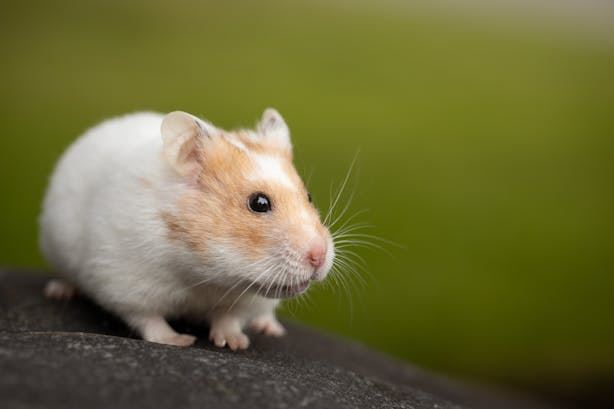

Bull dog
-
Origins: Bulldogs were bred in Europe for bull-baiting, a sport now banned. They have a rich history and were once used in bloody battles against bulls.
- British Heritage: Bulldogs originated in England during the 13th century. They became popular during World War II and even resemble Winston Churchil
-
tout and Strong: Despite their short legs, Bulldogs can weigh up to 50 pounds. Their sturdy build can lead to skeletal issues.
-
Bully Breeds: Other bully breeds trace their lineage back to Bulldogs.
|

MaineCoon Cat
-
Origins: it’s the oldest cat breed native to America, specifically originating in the state of Maine. It’s believed that long-haired cats were brought by Vikings and European sailors.
- Gentle Giants: These cats are often called “gentle giants.” They have a muscular build and can weigh between nine to 18 pounds. Despite their size, they’re friendly and sociable.
-
Temperament: Maine Coons have a lovely temperament and are often referred to as the “dogs of the cat world.”
-
Playful Creatures: Playtime is a priority for these curious cats. They love interacting with people and can even be trained to perform simple tricks.

Rabbit
- Origins: The domestication of rabbits began around the 5th century in monasteries in Southern France. Monks bred wild European rabbits for their meat and fur.
- Diet and Size: They can’t live off carrots alone; their diet includes greens like weeds and grasses.
- Binkying Behavior: Rabbits “binky” when they’re happy, doing a twist in mid-air.
- Grooming Habits: They groom themselves like cats and can’t vomit.

Parrot
- Origins: Parrots are native to China and other parts of Asia. They were selectively bred for color over 1,000 years ago in imperial China, resulting in distinct breeds.
- Speech Mimicry: They can mimic human speech and recognize different faces.
- Brain Structure: Parrots have a highly developed cerebrum and expressive body language.
- Toe Adaptations: Their toes are made for climbing, and they can’t close their eyes while sleeping

Hamster
- Origins: Hamsters originated in Asia, including China, Hong Kong, Korea, and Taiwan.
- Memory and Face Recognition: They can recognize faces and have a memory span of at least three months.
- Tool Usage: Some can use tools, like the greater vasa parrot.
- Climbing Abilities: Hamsters have zygodactylous toes for climbing.

Gold Fish
- Origins: Goldfish originated in eastern Asia, including China, Hong Kong, Korea, and Taiwan. They were selectively bred for color over 1,000 years ago in imperial China.
- Digestive System: They don’t have stomachs and should be fed small, easily digestible meals.
- Lifespan: With proper care, goldfish can live for over 40 years.
- Collective Noun: The collective noun for goldfish is “a troubling.
News
|